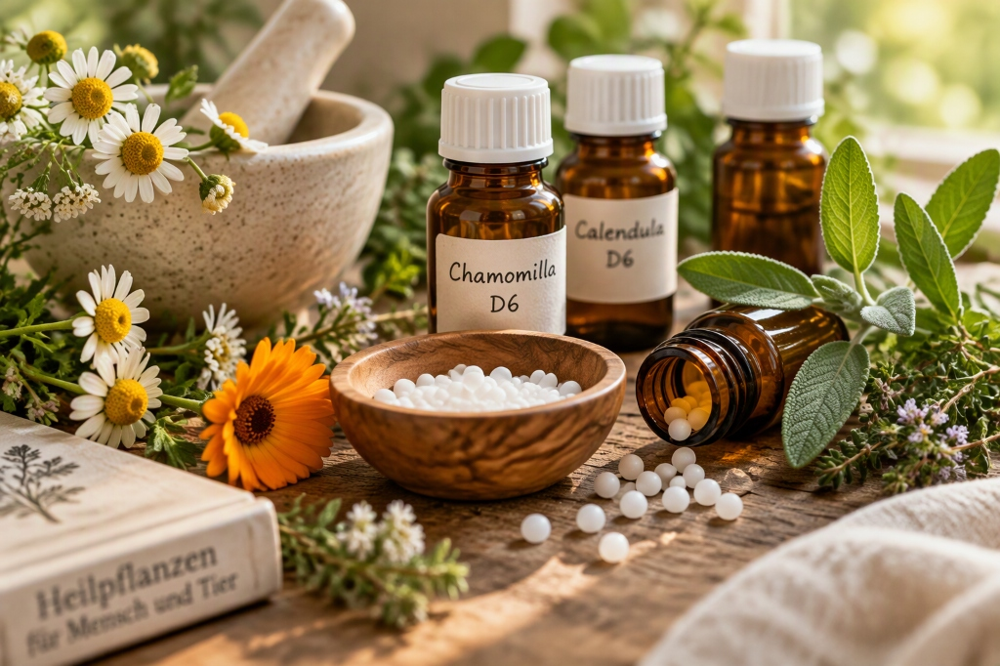

Schwerpunkt der PraxisKlassische Tierhomöopathie & Horvi-Enzymtherapie
Die klassische Homöopathie ist eine Reiz- und Regulationstherapie. Sie zielt darauf ab, mit Hilfe von Einzelmitteln den Organismus zur Selbstheilung anzuregen. Ausgangsstoffe sind nicht nur Pflanzen, sondern auch Tiere und ihre Produkte sowie Mineralien, Steine, Erde und Metalle.
- Konstitutionstherapie: Ermittlung des individuellen Konstitutionstyps bei chronischen Beschwerden
- Horvi-Enzymtherapie: Sanfte, naturheilkundliche Enzymregulation als begleitende Arzneitherapie
- Begleitung bei Eingriffen & Verhalten: Sanfte Unterstützung rund um OP, Narkose, Stress & Eingewöhnung